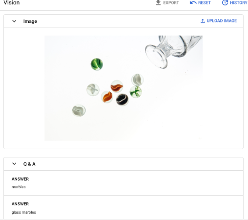
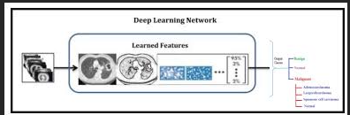

About Me
I am a dedicated professional with a Mechatronics Engineering background and diverse experience in roles such as Research Assistant, Research Engineer, Application Engineer, System Analyst, and Data Scientist. My expertise lies in deep learning, with a focus on deploying end-to-end models across AWS, Azure, Heroku, and Hugging Face. I am skilled in Natural Language Processing (NLP), Computer Vision (CV), and Generative AI (GenAI). A highlight of my career includes developing advanced RAG (Retrieval-Augmented Generation) chatbots using graph databases to enhance conversational capabilities and knowledge retrieval. Currently, I am transitioning into an AI Engineer role, eager to leverage my skills to drive technological innovation. I am also preparing to pursue a Master’s degree in Artificial Intelligence from the University of Texas, which will further deepen my expertise in AI and machine learning. I am enthusiastic about connecting with professionals in the AI and tech communities. Let’s collaborate and explore how we can advance technology together! Outside of work, I enjoy hiking or a good read, which helps fuel my creativity and problem-solving skills.
Projects
Credit Card Fraud Detection
Credit card fraud detection project is designed to classify transactions as fraudulent or non-fraudulent using machine learning techniques. The project leverages Python, Docker, Streamlit, and MLFlow to build and deploy the model. It uses a dataset sourced from Kaggle, which involves feature transformation through principal component analysis and handling data imbalance with SMOTE. Categorical features are encoded for model training. Three predictive models are compared: Linear Regression, Gradient Boosting, and Random Forest. The Gradient Boosting Algorithm achieves the highest accuracy at 95%, demonstrating its effectiveness for this task. The project includes interactive visualizations using Streamlit to display model performance and other insights.
View on GitHubGenAI-Finder APP
Find the Answers is a Streamlit application that leverages Google’s Generative AI to analyze uploaded images and generate responses based on user prompts. This app utilizes the Gemini Pro Vision model from Google’s API to provide insights and answers related to the content of the uploaded image.
View on GitHubBank Transaction Fraud
The dataset features transactions from 1000 customers and 800 merchants, including both legitimate and fraudulent transactions. Key steps include balancing the data through oversampling, engineering features, and scaling. Logistic Regression and XGBoost models were trained and evaluated, with XGBoost showing better performance after hyperparameter tuning. Models and preprocessing pipelines were saved and deployed via a Flask application on Azure, enabling real-time fraud detection.
View on GitHubCancer Detection Image Classification with Deep Learning
This project is a Flask web application for classifying medical images into HP and SSA categories using pre-trained DenseNet, ResNet50, and Fully Connected Convolutional Network (FNN) models. It is deployed on AWS. Installation involves setting up Python 3.8+, Docker, and AWS tools. The application can be run locally with Docker by building the image and accessing it via http://localhost:5000. The project includes data preprocessing with SMOTE to address class imbalance and uses various models for classification. For troubleshooting, ensure Pillow is installed and verify Dockerfile and AWS configurations. The project saves and reloads models for predictions using standard methods.
View on GitHub